A concept render for a never started project (Blender).
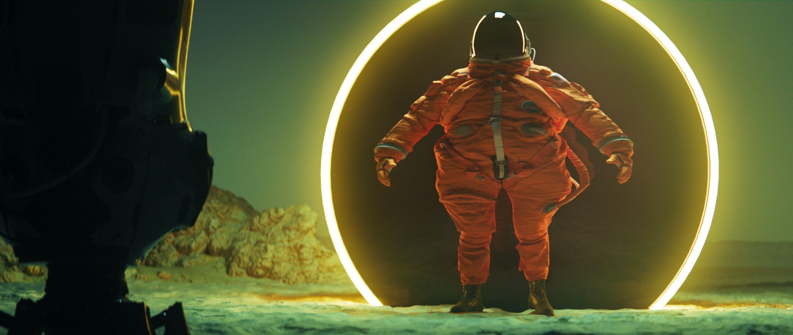
School exercice to test Resolve. Some motion-design "dailies" vibes.
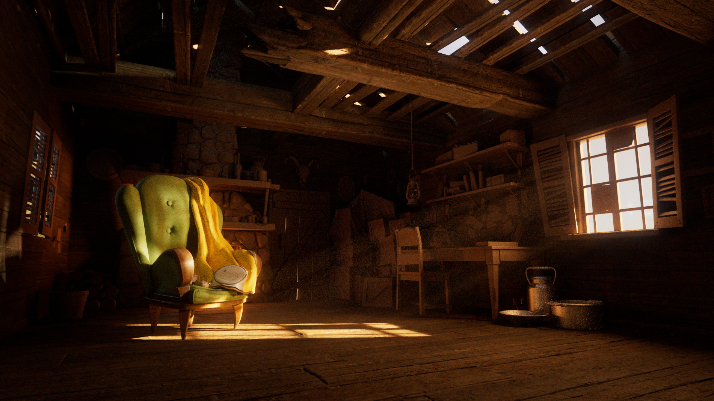
A Redshift lighting project for one of the famous free Pixar scene. There's not one single props that is textured except for the chair and the cabin wooden structure.
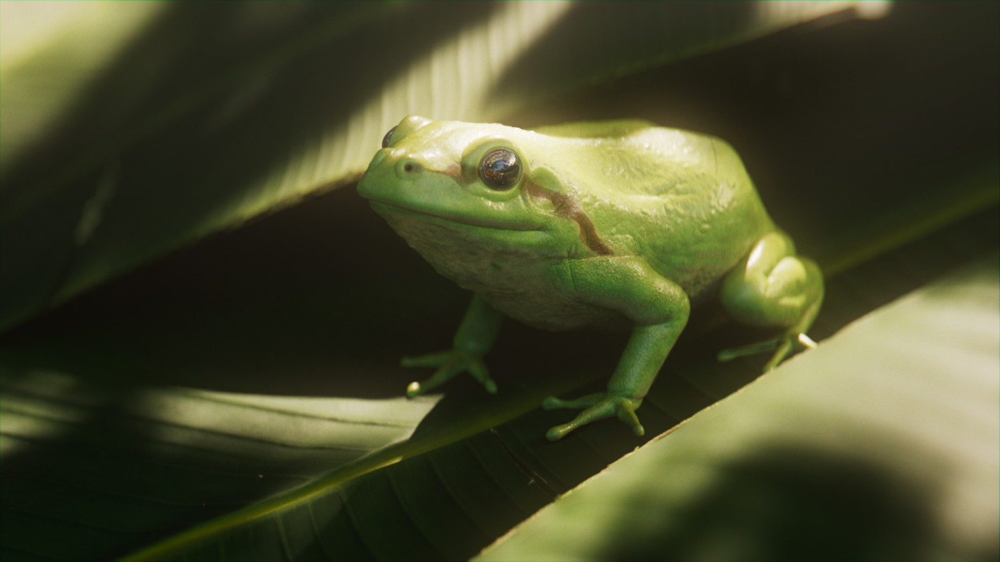
A school project where we had to sculpt in Zbrush and render a realistic animal. Photoshop did the trick to replace the texturing 🙈.
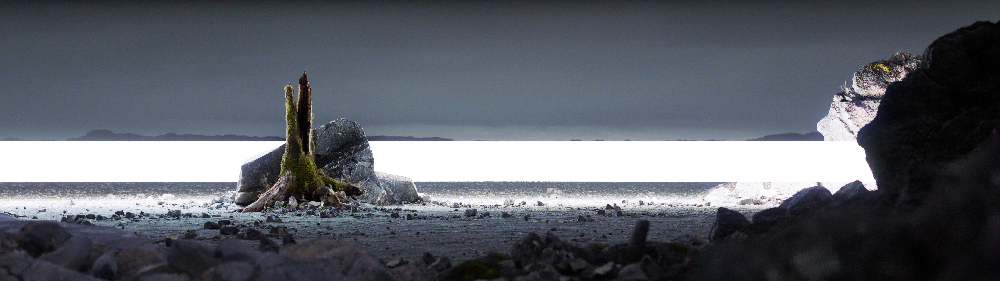
Personal, nearly-finished project where I had fun with Megascans assets (Redshift + Maya).
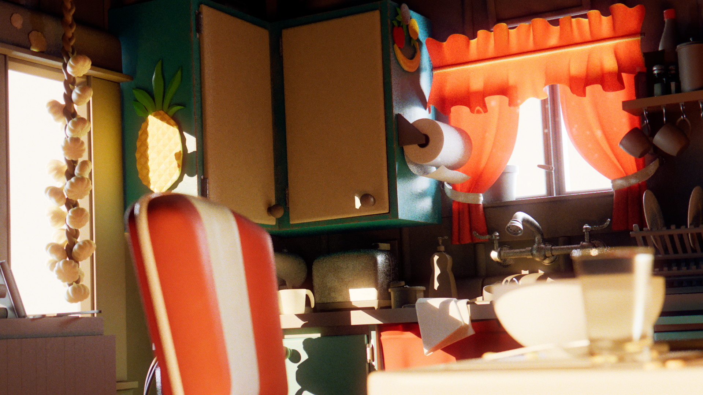
Lighting exercice on the famous Pixar kitchen scene.
A fake advertisment of a real brand for a Japanase cooking knife.
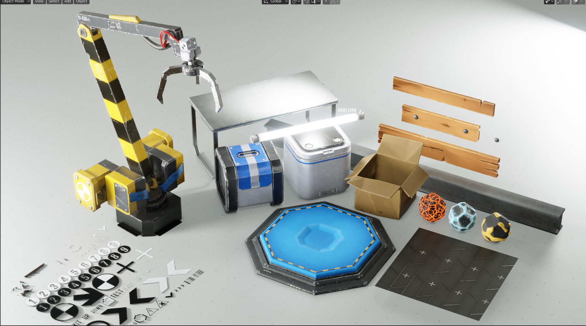
Some sci-fi assets made for a small video-game.School project, first time doing 2.5D mattepainting with Nuke and Photoshop. This is a layered Photoshop composition where each alyer have been reprojected on 3d geometry.
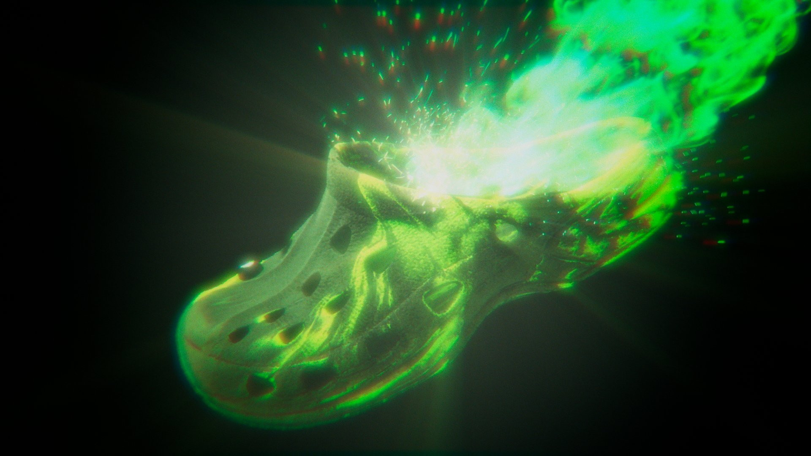
The Ultimate Crocs experience ™, some of my first test with Nuke
(yes you might have notice older projects were already using Nuke,
but it's because I actually I reopened them, took the original renders and redid the post-processing with Nuke).
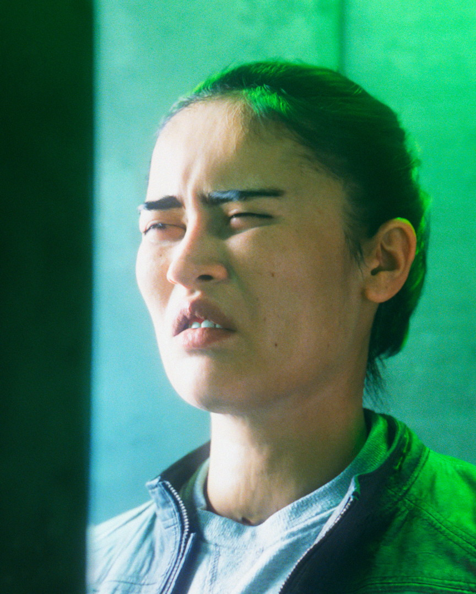
School work, model is a free scan. (visual representation of people looking at discord light theme)
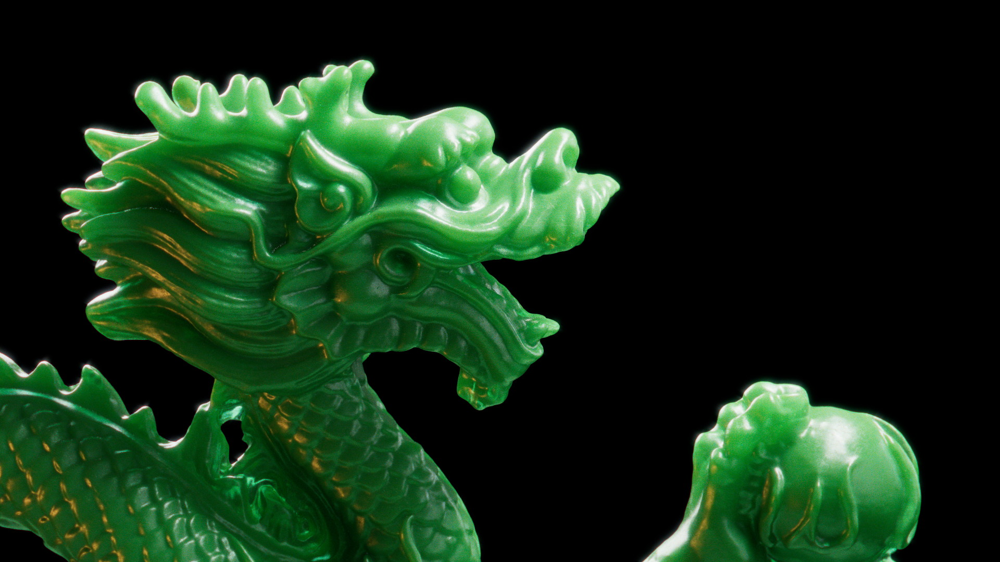
Test render for the Redshift SSS, this green is so beautiful..
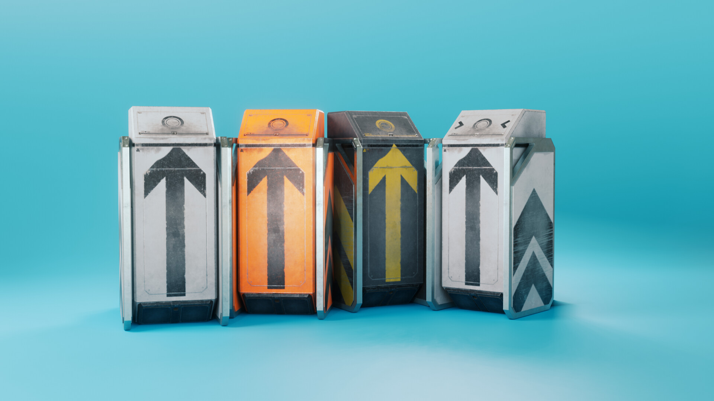
Took me one week to make to not be visible in the final render (that is just below).
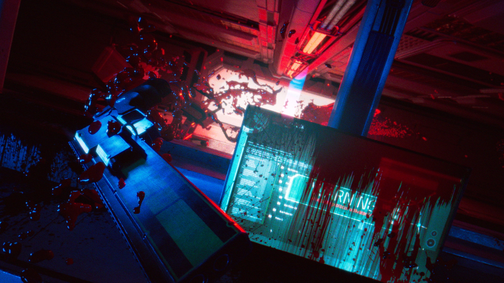
This was my school 2nd year final project. There was so much energy put into this, I was so much tired that I guess I got lost at the end and the final render is not that great.
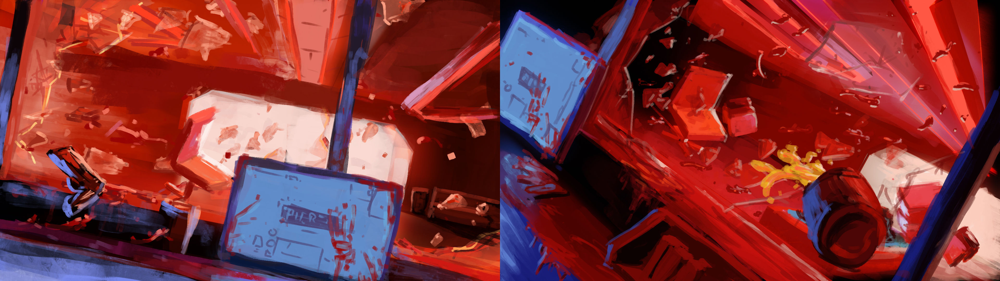
The concept art I draw for the previous project.
2020 Projects
Various project I did through the last year (2019-2020). A mix of school projects, or unfinished personal projects
which I was still kinda happy with the final result.